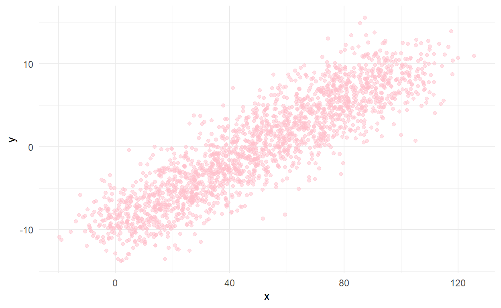
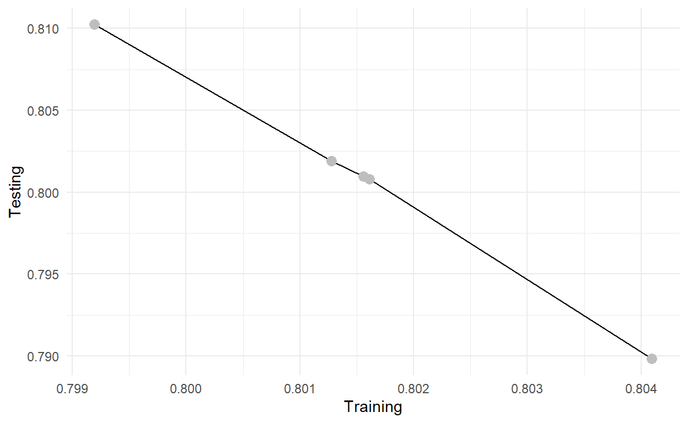

To do list
* add references
* add quiz
* add section on 'external' cross validation
* Fix js
* add practical PISA example
* format for tutorial set-upAfter fitting a model to your data, you might want to know how well it would fit other, similar data. If your model does not fit other data very well, it may not be representative of the true relationships between the variables in your model. It may only represent relationships in the data used to fit the model. Determining the fit of a model on data that was not used to derive model parameters is known as cross-validation.
In some cases, you would be able to collect new data to perform cross-validation, i.e., observe the performance of your model on newly collected data. In others, it may be unfeasible to collect more data. In this case, you can estimate the performance of your model on new data with your original data. This tutorial is to illustrate the methods to perform cross-validation on your original data.
Cross-validation methods that do not require new data collection are based on the idea of a holdout sample. You split your data into two parts: a training set and a testing (or holdout) set. A model is fitted on the training set and ‘tested’ on the holdout set, and the performance of your model, estimated with the training set, on the testing set is your estimation of your model’s generalizability on unseen data. The idea of ‘testing’ here refers to checking how well the model fits to the holdout sample. If the model fits well on both samples, this offers evidence for the generalizability of your model to a hypothetical larger sample of data (REF). The estimation error of the model in the testing set (usually MSE) is termed testing error. We can also use other indices (e.g., R2, AIC, BIC) to measure test error.
DISCUSSION ABOUT PROPORTIONS To estimate model performance accurately, both the training set & the testing set need to be representative of the original dataset. If the training or testing data are unrepresentative of the complete data then the results from the test sets can be biased. As we all know, the goodness of a model is also determined by the sample size of the dataset used to estimate it. The smaller the sample size, the worse the model. Therefore, we tend to make the training set as large as possible. Typically, a training set is over half of the original sample (say, 80%).
However, as the training set is always smaller than the original dataset, the performance of the model estimated with the training set tends to be worse than the model estimated with the original dataset. That is, the holdout CV tend to overestimate test errors and underestimate model fit.
LOOCV is a extension of the holdout method. Like the holdout method, LOOCV involves splitting the set of observations into two parts. However, instead of creating two subsets of comparable size, a single data point \((x_1, y_1)\) is the holdout set, and the remaining observations \(\{(x_2, y_2 ), ... , (x_n, y_n)\}\) compose the training set. The model is fit on the \(n − 1\) training observations, and a prediction \(\hat{y}_1\) is made for the excluded observation, using its value \(x_1\). The estimation of test error with \((x_1, y_1)\) would be MSE1 = \((y_1 - \hat{y}_1)^2\). As we only have used a single observation, this estimation of test error is biased. To obtain an unbiased estimation of test error, we can repeat the procedure until we loop through all observations in the original dataset, and then average all the estimated test errors. The equation for the estimation of test errors with LOOCV would be:
\[\mathrm{CV_{(n)}} = \frac{1}{n}\sum_{i = 1}^n \mathrm{MSE_i}\] where n is the sample size of the original dataset, and i is the ith data point, and MSEi = \((y_i - \hat{y}_i)^2\)
LOOCV is better than the holdout method in many ways
First, it is far less biased. The results of holdout CV is highly subjective to the division of training and testing set. In contrast, LOOCV always yields the same result. LOOCV loops through all observations in the dataset and uses the mean MSE, which is an unbised estimation of test error, as the result.
Second, as LOOCV uses a much larger training set than holdout CV, it tends not to overestimate test error as much as holdout CV does.
However, LOOCV is computational heavy, especially when sample size is large. Therefore, we often use k-fold cross-validation method, which also generates unbiased estimation for test errors but requires far less computation.
Like LOOCV, k-fold CV is also an iterated version of the simple holdout algorithm, You randomly partition your dataset into \(k\) subsamples (commonly k = 5 or 10). One after another, each sub-sample is used as the testing set for a model fit to the data in all other sub-samples. Metrics of interest are averaged across iterations, the result of which can be used to draw conclusions about the generalisability of the model (REF). By iterating over cross-validation algorithms, the bias of model-fit indicators (e.g., RMSEA, BIC) is also reduced compared to simple, singular holdout cross-validation (REF). for the estimation of test errors with k-fold would be:
\[\mathrm{CV_{(k)}} = \frac{1}{k}\sum_{i = 1}^k \mathrm{MSE_k}\]
See below for a demonstration of the k-folds algorithm.
THIS DOESN’T WORK WITH SHINY_PRERENDERED - MIGHT WORK WHEN HOSTED ON A SERVER USE THIS LINK TO SEE WHAT IT’S SUPPOSED TO LOOK LIKE https://editor.p5js.org/daikman/present/U2GomNWcKk-fold CV has multiple benefits over LOOCV
Computational benefits: iterate k times instead of n times
The second benefit lies in the bias-variance trade-off.
As mentioned before, cross-validation tend to overestimate test errors, especially when the training sample size is small. Therefore, holdout CV tends to overestimate the test error the most, and LOOCV gives approximately unbiased estimation as its training sample size is n-1, which is almost the same as the original sample size. k-fold CV is intermediately biased. Therefore, LOOCV has advantage over k-fold CV in terms of bias-reduction.
However, k-fold CV has less variance than LOOCV. As each time only one data point is singled out, the samples used to train the model are highly similar to each other in LOOCV, whereas in k-fold CV, the samples used to train the model are much less similar to each other. Therefore, the effective degrees of freedom of LOOCV is much smallers than k-fold CV. This puts LOOCV at a higher risk of overfitting, i.e., more variance.
DISCUSS VALUE OF K
The above arguments also indicate the impact of value of k on the results of k-fold CV. The larger the value of k, the more similar k-fold CV is to LOOCV, and the less bias and the more variance. The most commonly used values are k = 5 and 10.
The plot below shows a clear positive relationship between variables \(x\) and \(y\). To demonstrate the application of cross-validation, we will train and test the model \(y_{i} = \beta_0 + \beta_1x_{i}\) using this dataset. This is a simple linear regression model.

This first step for simple holdout cross-validation is splitting the dataset into testing and training data.
# Defining the proportion of the data to be used for training (the rest will be used for testing)
training_proportion <- 0.8
# Randomly selecting rows from the full dataset (must be in wide format)
training_rows <- sample(1:nrow(dataset), floor(nrow(dataset)*training_proportion))
training_data <- dataset[training_rows, ]
# Selecting the remaining (non-training) rows to be used for testing
testing_data <- dataset[-training_rows, ]Next, we can fit a model to the training data and find the desired fit index (\(R^2\) in this case).
# Fitting a model to the training data
train.fit <- lm(y ~ x, training_data)
# Extracting R-Squared from the training model
train_R_Squared <- summary(train.fit)$r.squared # (it's around 0.8)Using the model fitted to the training data, we need to calculate predictions for the values of \(y\) in the testing data based on the observed values of \(x\) in the testing data and the parameters \(\beta_0\) and \(\beta_1\) from the model fitted above. The predict() function from the stats package can plug in the \(x\) values from the testing data into the model in order to estimate the \(y\) values.
# Predicting values of y, using the model fit to the training data, from the values of x in the testing data.
prediction <- predict(train.fit, data.frame(x = testing_data$x))\(R^2\) for this prediction can be calculated from the differences between each predicted value of \(y\) and the corresponding observed value of \(y\). These differences are known as residuals. The \(R^2\) statistic, in this case, will tell us how well the model parameters derived from the training sample fit the data in the testing sample.
# Subtracting predicted values of y from actual values of y
residuals <- testing_data$y - prediction
# Calculating R-Squared
residuals_ss <- sum((residuals)^2)
total_ss <- sum((testing_data$y - mean(testing_data$y))^2)
test_R_Squared <- 1 - residuals_ss/total_ssThe model fitted to the training data fits that data with an \(R^2\) of around 0.792. This same model fit the testing data with an \(R^2\) of around 0.836.
This means that the model fit both sub-samples of data well. The fact that the testing data was ‘unseen’ during the model fitting process suggests the model would fit well to other unseen data (e.g., data collected in the future), providing evidence of predictive validity.
Implementing \(k\)-folds cross validation works much the same as above, only we repeat the process using different divisions of the data (into training and testing sub-samples) each time. We can essentially wrap all the R code above in a loop, or use an iterative function.
First, we need to decide on the value of \(k\). For this demonstration, we will set \(k\) to 5.
k <- 5Next, we need to split the data into \(k\) (5) training and testing sets, where the testing sets are 1/5th the size of the whole dataset.
# Shuffling the data
## generating new random row numbers
set.seed(123)
new_positions <- sample(1:nrow(dataset), nrow(dataset), replace = FALSE)
## sorting dataset by random row numbers
dataset <- arrange(dataset, new_positions)
# Dividing data into k training and testing sets
## pre-allocating list to store results of the loop below
testing_indexes <- list()
## using a loop to define the rows of data to use for testing in each fold
## the mathematical part of this loop produces the numbers 1-400, 401-800... when k = 5.
for (i in 1:k) {
testing_indexes[[i]] <- floor(
(1+(i-1)*nrow(dataset)/k):((i)*nrow(dataset)/k)
)
}Now we need to iterate through all the testing sub-samples (as defined by testing_indexes) using the rest of the data to train the model. (This will be the same model as above: \(y_{i} = \beta_0 + \beta_1x_{i}\)).
# Pre-allocating vectors to store the results of each iteration
train_R_Squared_Repeated <- vector()
test_R_Squared_Repeated <- vector()
# 'Looping through' each of the training/testing data combinations.
## this loop could be combined with the loop above (as they both use `i in 1:k`).
for (i in 1:k) {
# Selecting the testing data from the full dataset, using the indexes defined above
testing_data <- dataset[testing_indexes[[i]], ]
# Selecting the remaining (non-training) rows to be used for testing
training_data <- dataset[-testing_indexes[[i]], ]
# Fitting a model to the training data
train.fit <- lm(y ~ x, training_data)
# Extracting R-Squared from the training model
train_R_Squared_Repeated[i] <- summary(train.fit)$r.squared
# Predicting values of y, using the model fit to the training data, from the values of x in the testing data.
prediction <- predict(train.fit, data.frame(x = testing_data$x))
# Subtracting predicted values of y from actual values of y
residuals <- testing_data$y - prediction
# Calculating R-Squared
residuals_ss <- sum((residuals)^2)
total_ss <- sum((testing_data$y - mean(testing_data$y))^2)
test_R_Squared_Repeated[i] <- 1 - residuals_ss/total_ss
}| Fold | Testing | Training |
|---|---|---|
| 1 | 0.8009482 | 0.8015596 |
| 2 | 0.8102337 | 0.7991945 |
| 3 | 0.8008074 | 0.8016142 |
| 4 | 0.8018985 | 0.8012767 |
| 5 | 0.7898264 | 0.8040950 |

The table and figure above display the \(R^2\) values for each of the sub-samples, for each ‘fold’. The results are similar across folds, with all \(R^2\) values being quite high.
In the figure, you can see that models that fit better to the training data fit worse on the testing data. This is known as overfitting, which occurs when a model’s parameters are fit so well to a dataset that they are highly influenced by the random error in the that dataset, making them less accurate for unseen data, as unseen data will not contain the same random error.
However, in this case we are not interested in overfitting. We want to know the results of our repeated cross-validation. To do that, we can average the \(R^2\) value (or any other fit index) over iterations.
The mean \(R^2\) for the training sub-samples is 0.802 (to 3 decimal places), which is slightly higher than the mean \(R^2\) for the testing sub-samples, 0.801.
The conclusion we could draw from this analysis is the same as the conclusion we drew above, from the simple holdout cross-validation. The model performs well on unseen data, providing evidence of its predictive validity.
# 'Looping through' all data points
for (i in 1:nrow(dataset)) {
# Selecting the testing data from the full dataset, using the indexes defined above
testing_data <- dataset[i, ]
# Selecting the remaining (non-training) rows to be used for testing
training_data <- dataset[-i, ]
# Fitting a model to the training data
train.fit <- lm(y ~ x, training_data)
# Extracting R-Squared from the training model
train_R_Squared_Repeated[i] <- summary(train.fit)$r.squared
# Predicting values of y, using the model fit to the training data, from the values of x in the testing data.
prediction <- predict(train.fit, data.frame(x = testing_data$x))
# Subtracting predicted values of y from actual values of y
residuals[i] <- testing_data$y - prediction
}
# Calculating R-Squared
residuals_ss <- sum((residuals)^2)/nrow(dataset)
total_ss <- var(dataset$y)
test_R_Squared <- 1 - residuals_ss/total_ss
train_R_Squared <- mean(train_R_Squared_Repeated)
# make a result table
LOOCV <- data.frame(Testing = test_R_Squared, Training = train_R_Squared)
knitr::kable(
LOOCV,
styling = 'html',
caption = 'The R-Squared values for LOOCV'
)| Testing | Training |
|---|---|
| 0.8012688 | 0.8015495 |